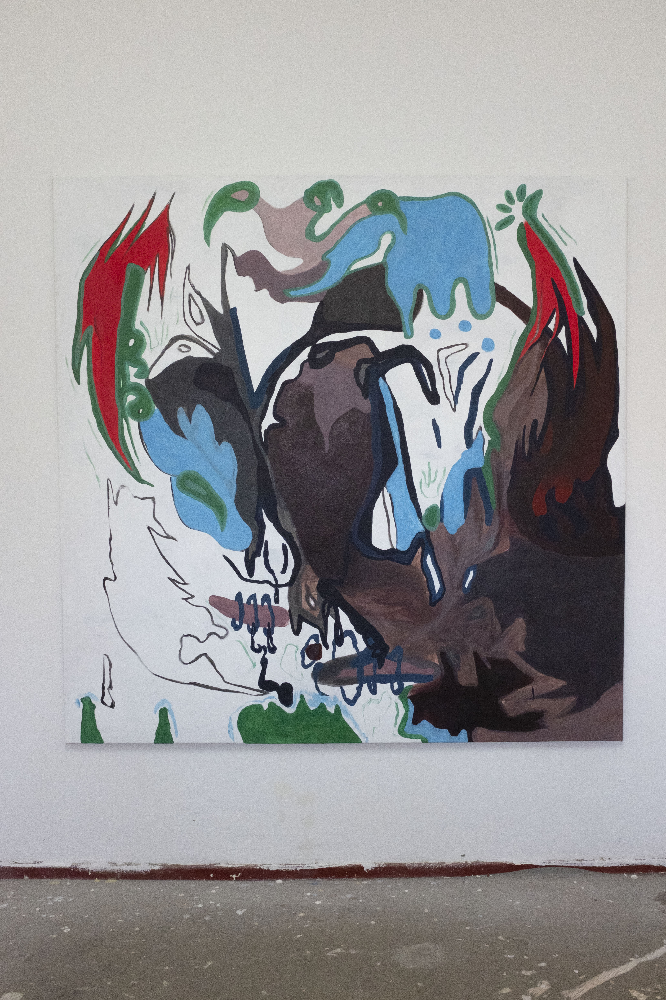
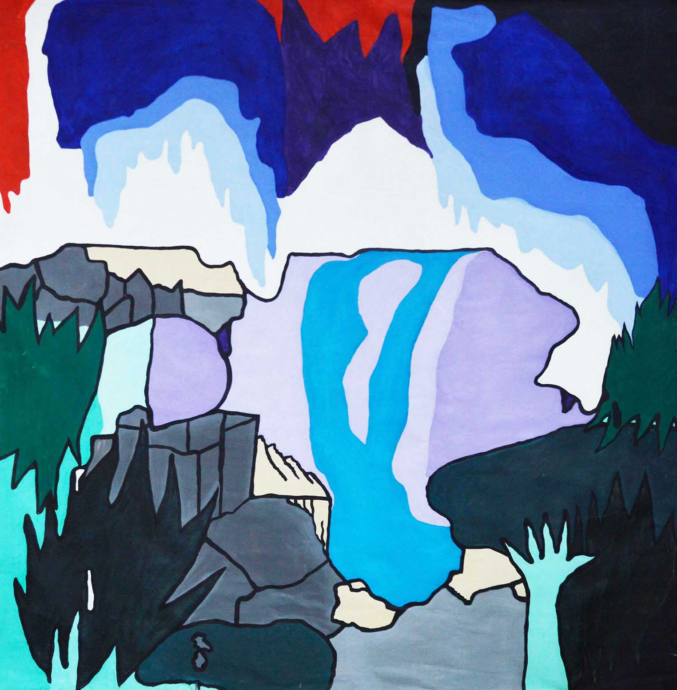
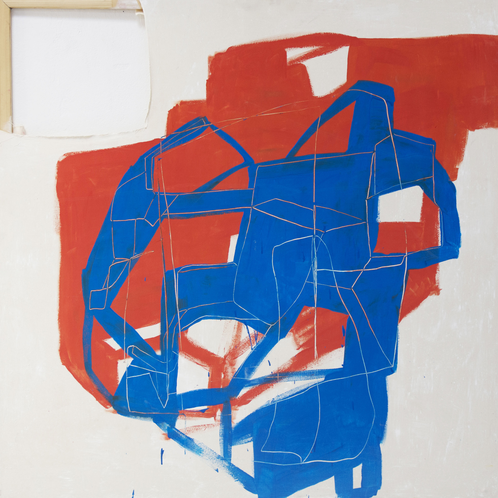
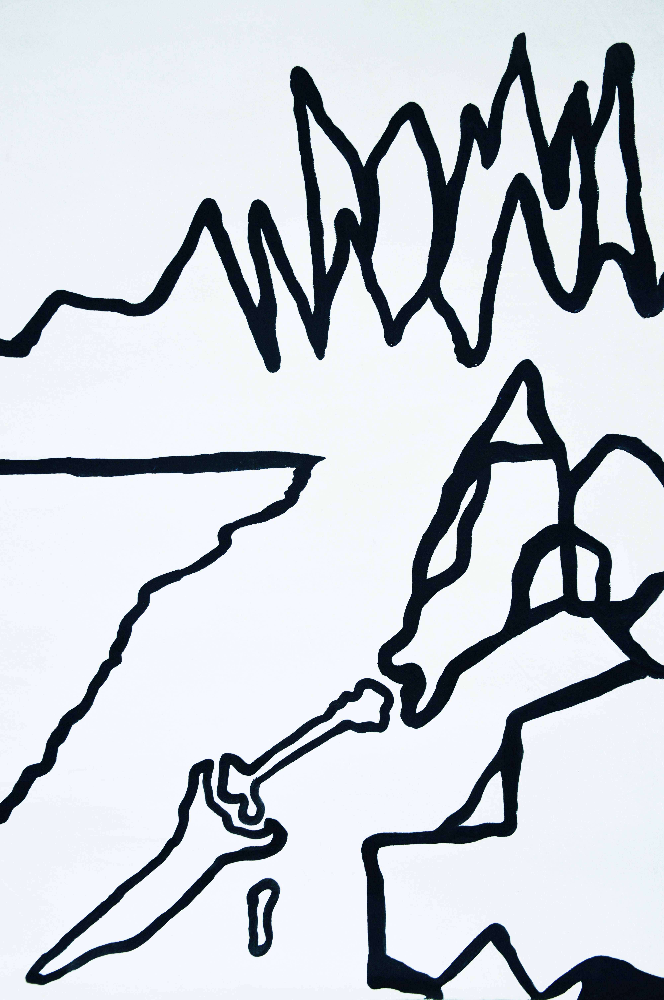
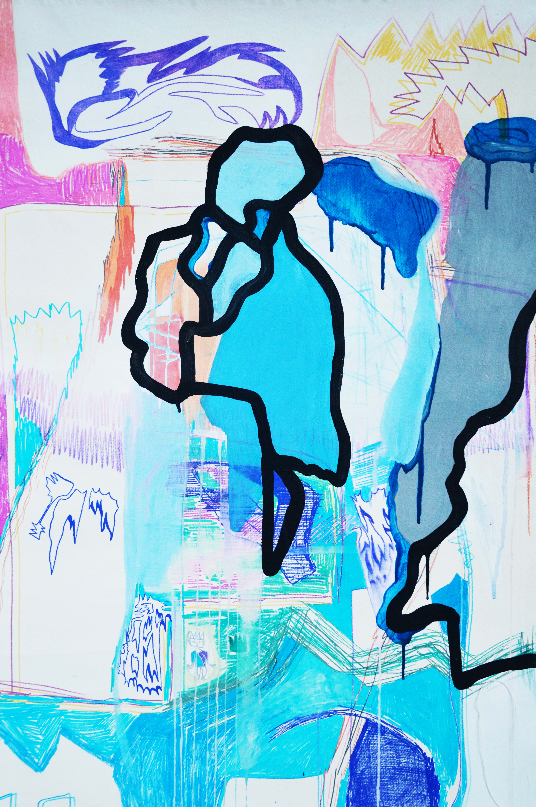
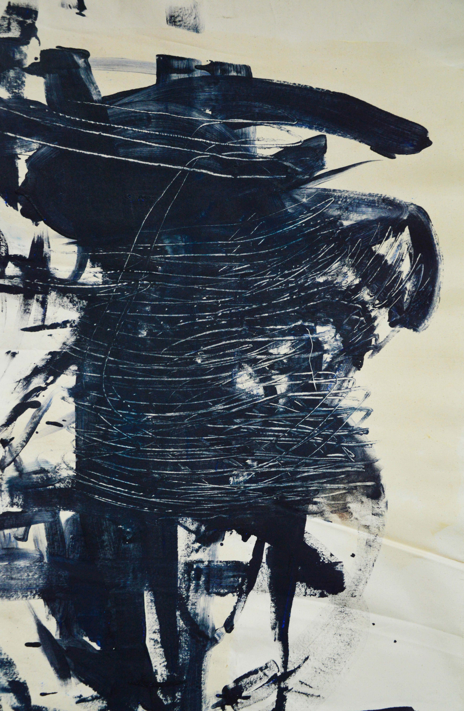

It is a series of paintings that are similar in style. They differ in their colour, which varies in intensity. Non architect is a work exploring colour and composition while listening techno music.

Untitled, 2020, acrylic on canvas, 160 x 150 cm
Untitled is massive, abstract and colorful but not contrasted. Written with techno in mind, it shows the importance of the auditory experience because of its repercussions on the painted gestures. It is a kind of real-time auditory experimentation by which design, colors and movements adapt to and are changed by sounds. It depicts scenes from digital heritage in a metaphoric way, mixing landscapes, organic forms, dirty textures, sensual colored patterns. Resembling body atoms and organic forms

About Last Night, 2020, acrylic on canvas, 200 x 200 cm

I Don't Know If It's The Virus The Problem, 2020, acrylic on canvas, 60 x 40 cm

Melting, 2019, acrylic on canvas, 100 x 40 cm
She Likes Sport, 2019, acrylic on canvas, 150 x 100 cm

Orange Et Bleu, 2019, acrylic on canvas, 160 x 140 cm

Bones, 2020, acrylic on canvas, 50 x 90 cm

Fluide, 2019, acrylic on canvas, 50 x 90 cm

Griffes, 2019, acrylic on canvas, 50 x 110 cm